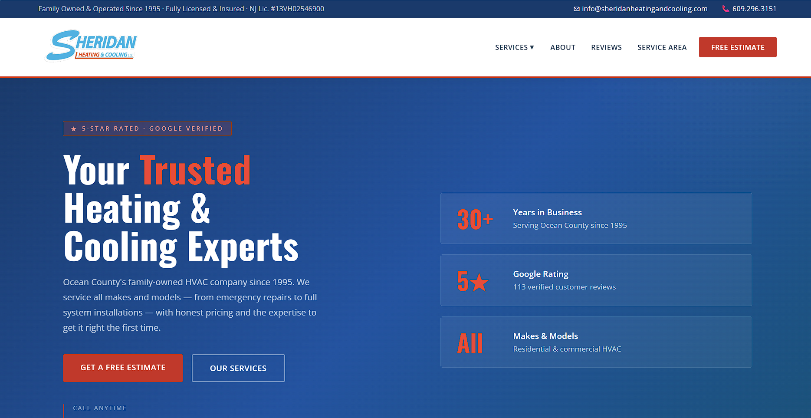
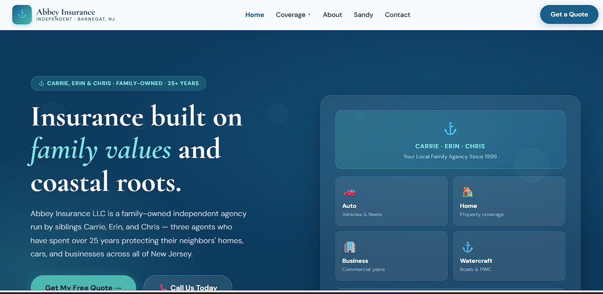
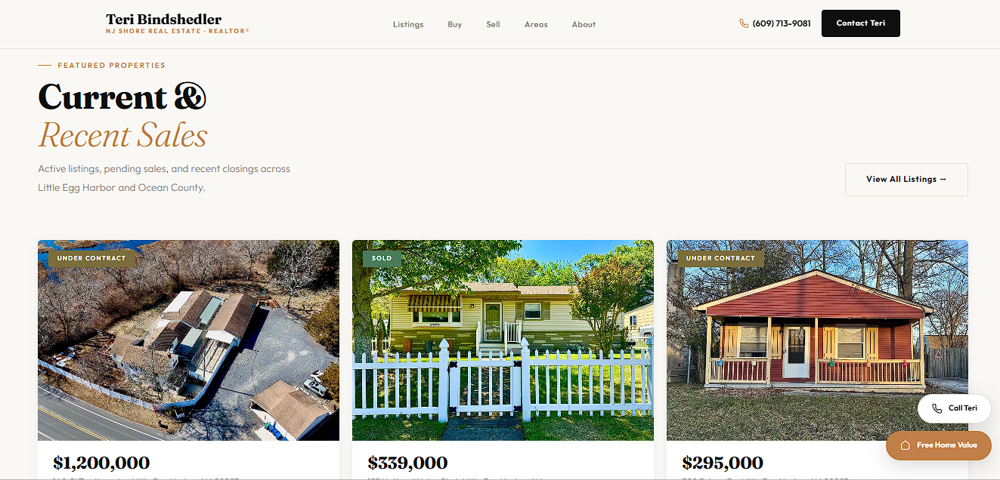

Every site I build is designed with one goal: turn visitors into customers. Here's what that looks like in practice.

📍 Ocean County, NJ · HVAC Services
Sheridan has been keeping Ocean County families warm for three decades, but almost nobody could find them online. When someone's heat quit at 9pm and they searched for a repair company, Sheridan simply didn't come up — so the work went to whoever did. Word of mouth was carrying the whole business.
I built them a new site from scratch, with its own page for each service they offer so that a search for "furnace repair" or "AC installation" has something specific to land on. It loads fast on a phone, which is where most emergency searches happen, and the phone number is tappable from every screen. Their Google Business Profile was set up and connected so they show up on the map, not just in the results.
No ad budget was involved. The goal was to earn the calls rather than rent them, so that the site keeps working after the marketing spend stops.

📍 Barnegat, NJ · Independent Insurance Agency
Abbey has been insuring Ocean County for more than 25 years. That history was their biggest asset and their website was hiding it — the design was dated, it was frustrating to use on a phone, and visitors couldn't quickly tell whether Abbey covered the specific thing they were worried about.
Now every type of coverage has its own page: auto, home, business, renters, watercraft, and flood. Someone searching for boat insurance in New Jersey lands on a page about boat insurance instead of a general homepage they have to dig through. Each one is written for what people in that situation actually search for.
Quote requests come straight through the site on a form built to ask only the questions that apply to the coverage being requested, instead of one long form for everything. For flood, customers can pull a live quote themselves without waiting on a callback.
The riskiest part was the switchover. Abbey had years of Google ranking tied to their old page addresses, and a careless rebuild would have thrown it away overnight. Every old address was mapped to its new home, so visitors and Google both land in the right place and the reputation they'd built carried over intact.

📍 Little Egg Harbor, NJ · NJ Shore Real Estate
In real estate people hire a person, not a brokerage — but most agent websites look identical, because they come from the same template. Teri needed something that felt like her: an experienced Shore agent who knows these specific towns, competing for attention against national listing portals with far bigger budgets.
The site leads with her rather than a search bar. Current and pending listings sit up top, and buyers and sellers each get a clear path showing what working with her actually looks like, so visitors know what happens after they reach out.
Rather than trying to rank for "New Jersey real estate" — a fight against the big portals she'd never win — the site targets the towns she actually serves, like Little Egg Harbor. Fewer people search those terms, but the ones who do are looking for exactly what she does.
📍 Delaware · On-Demand Vape & Tobacco Delivery
302 Smoke was running an on-demand delivery service entirely through phone calls and text messages. Every order meant someone reading a list out loud, and every question about what was in stock meant another interruption. It worked, but it didn't scale, and it was costing them orders whenever nobody could get to the phone.
They needed a real storefront: customers browse eight product categories, add what they want to a cart, and place the order themselves. Delivery details that used to get explained on every single call — the service area, the order minimum, accepted payment methods — are now stated plainly before checkout, so there are far fewer surprises and far fewer callbacks.
Selling age-restricted products makes compliance non-negotiable. Age verification is built into the front door of the site and again at checkout, so it isn't something staff have to remember to enforce under pressure.
The whole thing is built for someone standing outside on their phone, because that's who orders delivery — not someone sitting at a desk.
📍 Florida · Atmospheric Water Generation
Captiva Verde puts in systems that pull drinking water straight out of the air, for communities and sites that can't rely on a normal water supply.
The site had to work for two very different visitors at once. They're publicly traded, so investors arrive expecting a serious company. Towns and developers arrive asking something much simpler: what is this, and what would it do for us?
Every page opens in plain language and gets more technical the further you read, so both get what they came for. An impact calculator lets a visitor enter their own site details and see exactly how much water a system would produce for them — which turns an abstract idea into a real number.
A streamlined process built to move fast without cutting corners.
01 — DISCOVERY
Free call to understand your business, audience, and what success looks like — before a single pixel is placed.
02 — STRATEGY
Page structure, SEO keyword targets, conversion flow, and site architecture decided upfront.
03 — BUILD
Fast, clean HTML/CSS — no bloated page builders. Mobile-first, optimized for speed from the first line of code.
04 — LAUNCH
Full handoff, Google Business setup, sitemap submission, and a site that's indexed and ready to rank.
Let's build something that makes your competitors nervous.